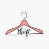

Learn More About Us
A thrift store is a shop that sells pre-owned or second-hand clothes and items at a cheaper price. It allows customers to find affordable and unique fashion pieces.
The main aim of this website is to boost thrift stores that sell affordable second-hand clothing such as bohemian, streetwear, artsy, and vintage fashion items.
This website provides customers with details and updates about the store, how they can buy or contact the business, and the available items in store.
It creates an online presence for easy access to customers and helps save time and energy by allowing users to check item availability before visiting the store.
It is a business-style website designed to promote and grow thrift stores, while allowing users to browse products from the comfort of their homes.
The primary target audience for this thrift store website includes tertiary students, young adults, and fashion enthusiasts.
Students aged 18–24 and young adults aged 25–30 value thrift shopping because they can buy more clothes for less money.
Fashion enthusiasts enjoy thrifting because they can find unique and stylish fashion items that are not commonly available in regular stores.
© 2026 For The Thrifters